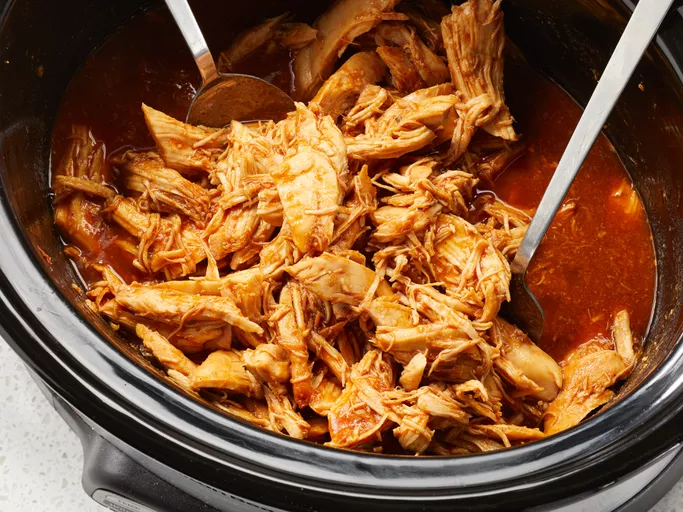

Zesty Slow Cooker Chicken Barbecue

This pulled chicken crock pot dinner uses a slow cooker to prepare this great twist on basic barbecue chicken.
Throw the chicken breasts in frozen, and serve with baked potatoes.
Ingredients
- 6 frozen skinless, boneless chicken breast halves
- 1 (12 onces) bottle barbecue sauce
- 1/2 cup Italian salad dressing
- 1/4 cup brown sugar
- 2 tablespoons Worcestershire sauce
Steps
- Place chicken in the slow cooker.
- Mix barbecue sauce, Italian salad dressing, brown sugar,
and Worcestershire sauce in a bowl.
- Pour barbecue sauce mixture over chicken.
- Cover and cook on low for 6 to 8 hours or on high for 3 to 4 hours.
- Shred to serve
Home